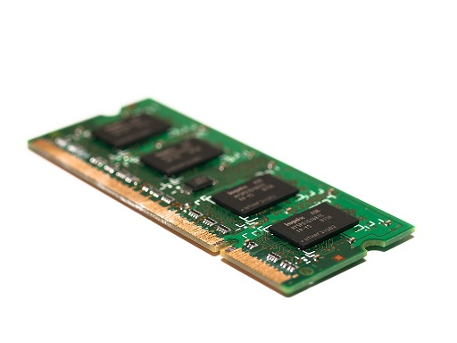

Fakta: RAM-minne ram minne är som datorns korttidsminne (Random Access Memory) är det datorminne som lagrar information som ett program behöver när det körs. Random Access Memory syftar på datalagring där den lagrade informationen kan läsas i vilken ordning som helst, dvs. slumpmässigt, inte bara i ordningsföljd.
